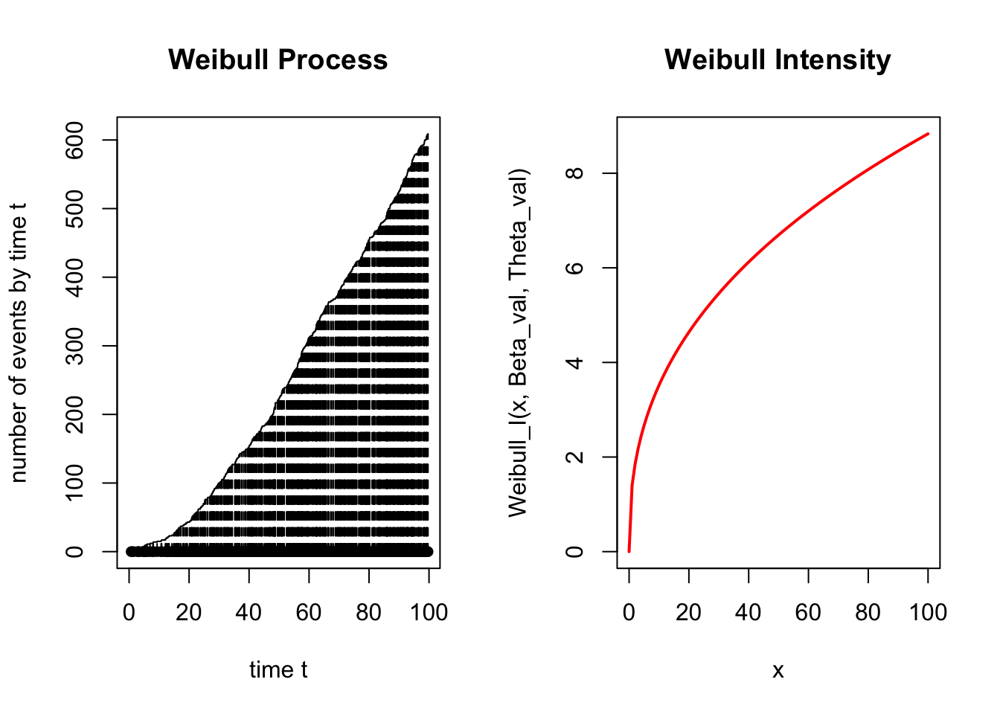
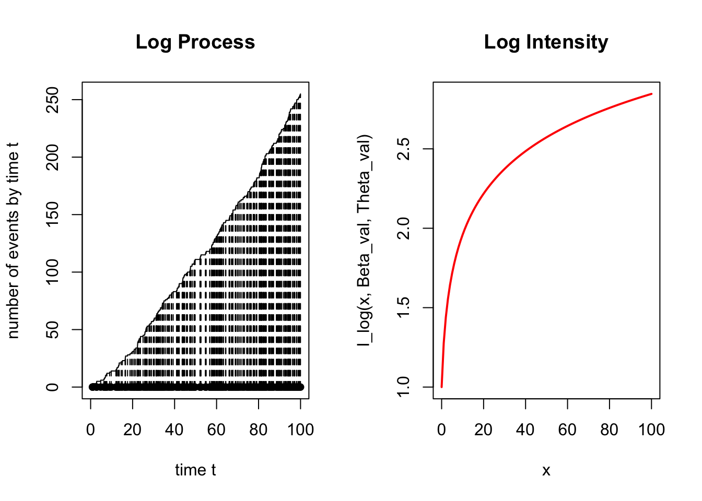
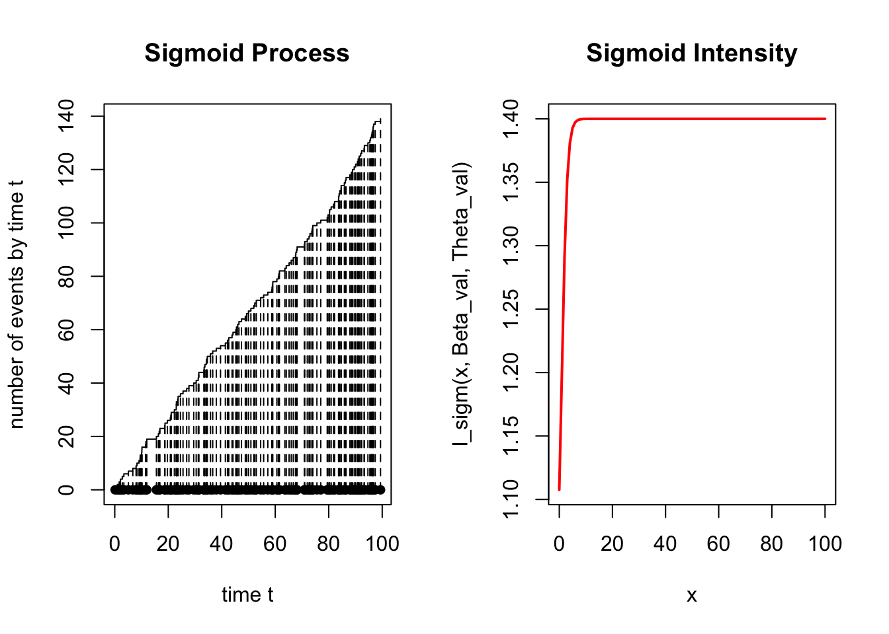
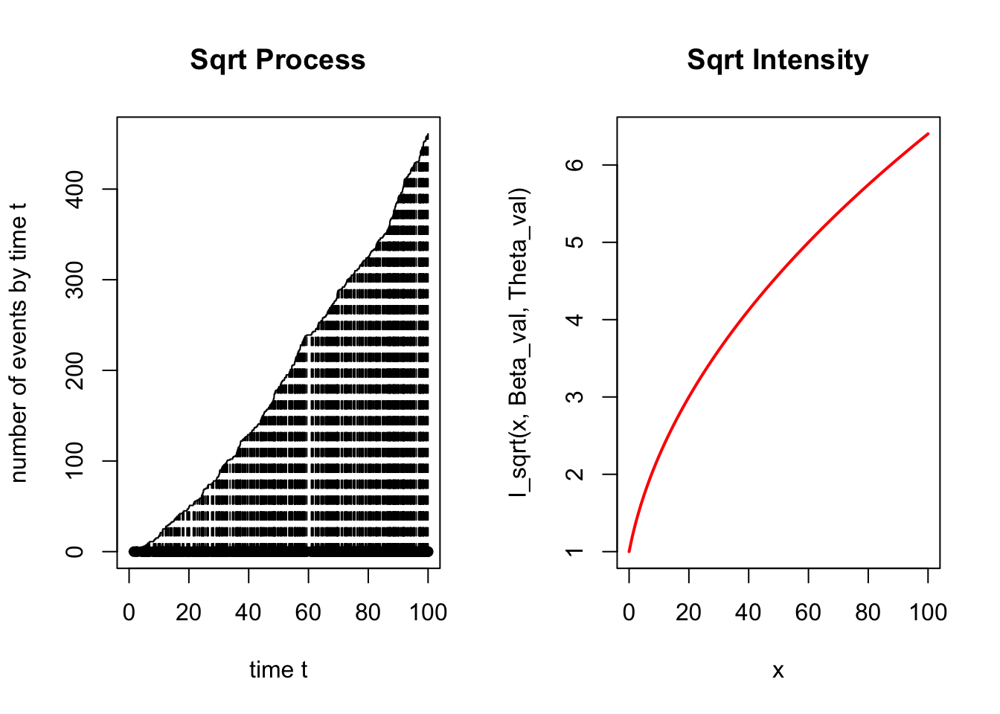
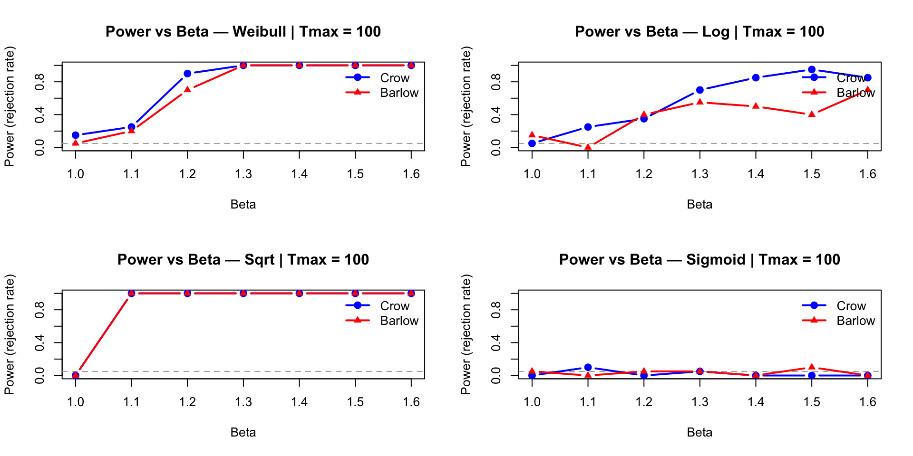
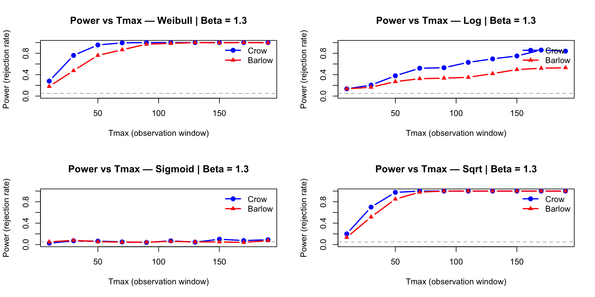
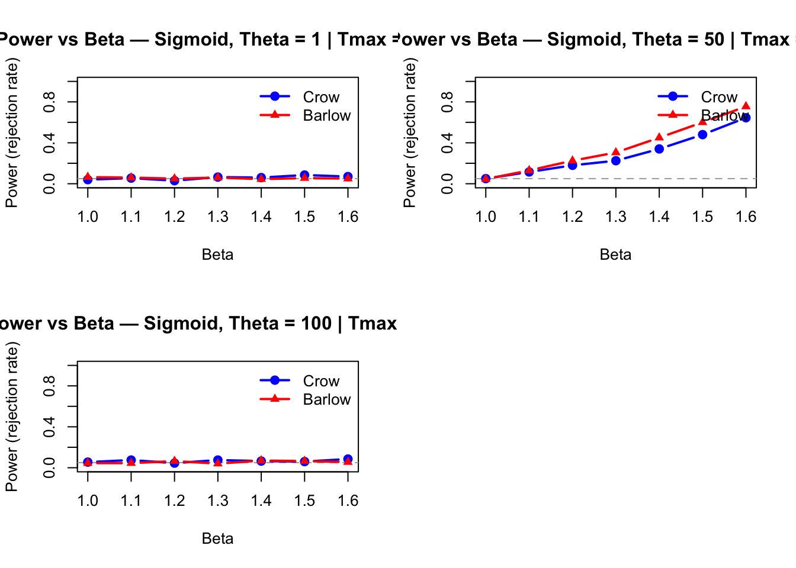

simulHPP <- function(lambda, Tmax) {
N <- rpois(1, lambda * Tmax)
U <- runif(N, 0, Tmax)
return(sort(U))
}Simulation of IHPP for different intensity function
Generative Functions
For this part we used the functions used in the TP
plot.PP <- function(PP) {
plot(c(0, PP), 0:length(PP), type = "s",
xlab = "time t", ylab = "number of events by time t")
points(PP, 0 * PP, type = "p", pch = 16)
lines(PP, 0:(length(PP) - 1), type = "h", lty = 2)
}simulPPi <- function(lambda_fct, Tmax, M) {
res <- NULL
PPh <- simulHPP(M, Tmax)
if (length(PPh) == 0) return(NULL)
U <- runif(length(PPh), 0, M)
for (i in 1:length(PPh)) {
if (U[i] < lambda_fct(PPh[i])) res <- append(res, PPh[i])
}
return(sort(res))
}Inhomogeneous Poisson Processes
Intensity functions
We define different intensity functions such that for \(H_0 : \beta =1\) the intensity has a constant rate.
Weibull_I <- function(x, beta, theta) {(beta / theta) * (x / theta)^(beta - 1)}
I_sigm <- function(t, beta, theta) {1 + (beta - 1) / (1 + exp(-(t - theta)))}
I_sqrt <- function(t, beta, theta){ (1/theta) * sqrt(1 + (beta - 1) * t / theta)}
I_log <- function(t, beta, theta) {(1/theta) * (1 + (beta - 1) * log(1 + t / theta))}Simulation functions
We now define the function needed to simulate the PP for each intensity function
simulWeibull <- function(beta, theta, Tmax) {
f <- function(t) {Weibull_I(t, beta, theta)}
M_val <- f(Tmax)
return(simulPPi(f, Tmax, M_val))
}
simulLog <- function(beta, theta, Tmax) {
f <- function(t) {I_log(t, beta, theta)}
M_val <- f(Tmax)
return(simulPPi(f, Tmax, M_val))
}
simulSigm <- function(beta, theta, Tmax) {
f <- function(t) {I_sigm(t, beta, theta)}
M_val <- f(Tmax)
return(simulPPi(f, Tmax, M_val))
}
simulSqrt <- function(beta, theta, Tmax) {
f <- function(t) {I_sqrt(t, beta, theta)}
M_val <- f(Tmax)
return(simulPPi(f, Tmax, M_val))
}Simulation and plot
Let’s see !
Beta_val <- 1.4
Theta_val <- 1
Tmax_val <- 100
par(mfrow = c(1, 2))
simW <- simulWeibull(Beta_val, Theta_val, Tmax_val)
plot.PP(simW); title("Weibull Process")
curve(Weibull_I(x, Beta_val, Theta_val), 0, Tmax_val, col = "red", lwd = 2, main = "Weibull Intensity")
par(mfrow = c(1, 2))
simL <- simulLog(Beta_val, Theta_val, Tmax_val)
plot.PP(simL); title("Log Process")
curve(I_log(x, Beta_val, Theta_val), 0, Tmax_val, col = "red", lwd = 2, main = "Log Intensity")
par(mfrow = c(1, 2))
simSg <- simulSigm(Beta_val, Theta_val, Tmax_val)
plot.PP(simSg); title("Sigmoid Process")
curve(I_sigm(x, Beta_val, Theta_val), 0, Tmax_val, col = "red", lwd = 2, main = "Sigmoid Intensity")
par(mfrow = c(1, 2))
simS <- simulSqrt(Beta_val, Theta_val, Tmax_val)
plot.PP(simS); title("Sqrt Process")
curve(I_sqrt(x, Beta_val, Theta_val), 0, Tmax_val, col = "red", lwd = 2, main = "Sqrt Intensity")
Statistical Tests
We now want to implement the Crow and Barlow test presented in the paper.
We added a silent parameter to choose whether we want a text response in the style of t.test.
Crow test
testCrow <- function(PP, Tmax, silent = FALSE)
{
n <- length(PP)
stat_test_Obs = 2 * sum(log(Tmax / PP))
p_value <- pchisq(stat_test_Obs, 2 * n)
if (!silent) {
print(paste("The Observed Crow Statistic is : ", stat_test_Obs))
print(paste("The p-value : ", p_value))
if (p_value < 0.05) {
print("Conclusion: we reject H0 at level 5%, Beta is greater than 1")
} else {
print("Conclusion: we do not reject H0 at level 5%, Beta could be 1")
}
}
return(p_value)
}Barlow test
testBarlow <- function(PP, Tmax, silent = FALSE)
{
n = length(PP)
if (n < 4) return(NA)
d = floor(n/2)
stat_test_Obs = ((n - d) * PP[d]) / (d * (PP[n] - PP[d]))
p_value <- 1 - pf(stat_test_Obs, 2 * d, 2 * (n - d))
if (!silent) {
print(paste("The Observed test Statistic is : ", stat_test_Obs))
print(paste("The p-value : ", p_value))
if (p_value < 0.05) {
print("Conclusion: we reject H0 at level 5%, Beta is greater than 1")
} else {
print("Conclusion: we do not reject H0 at level 5%, data suggests Beta could be 1")
}
}
return(p_value)
}Example test execution
Tmax <- 100
set.seed(42)
simEx <- simulWeibull(beta = 1.5, theta = 1, Tmax = Tmax)
print("------ Barlow ------")[1] "------ Barlow ------"testBarlow(simEx, Tmax)[1] "The Observed test Statistic is : 1.71302299493493"
[1] "The p-value : 0"
[1] "Conclusion: we reject H0 at level 5%, Beta is greater than 1"[1] 0print("------ Crow ------")[1] "------ Crow ------"testCrow(simEx, Tmax)[1] "The Observed Crow Statistic is : 1399.72525039115"
[1] "The p-value : 3.89037768804348e-29"
[1] "Conclusion: we reject H0 at level 5%, Beta is greater than 1"[1] 3.890378e-29Power Analysis We now want to analyze our test’s power. To do so, we will first see how the tests respond to different values of \(\beta\) and then to different values of \(T_{\max}\).
1. Power as a function of Beta
plot_puissance_beta <- function(simul_func, liste_beta, Tmax, nsimu,
theta = 1, titre = "") {
puissances_C <- numeric(length(liste_beta))
puissances_B <- numeric(length(liste_beta))
for (j in seq_along(liste_beta)) {
b <- liste_beta[j]
rejet_crow <- 0
rejet_barlow <- 0
for (i in 1:nsimu) {
donnees <- simul_func(beta = b, theta = theta, Tmax = Tmax)
if (length(donnees) > 1) {
p_c <- testCrow(donnees, Tmax, silent = TRUE)
p_b <- testBarlow(donnees, Tmax, silent = TRUE)
if (!is.na(p_c) && p_c < 0.05) rejet_crow <- rejet_crow + 1
if (!is.na(p_b) &&p_b < 0.05) rejet_barlow <- rejet_barlow + 1
}
}
puissances_C[j] <- rejet_crow / nsimu
puissances_B[j] <- rejet_barlow / nsimu
}
plot(NULL, xlim = range(liste_beta), ylim = c(0, 1),
xlab = "Beta", ylab = "Power (rejection rate)",
main = paste("Power vs Beta —", titre, "| Tmax =", Tmax))
abline(h = 0.05, col = "darkgrey", lty = 2)
lines(liste_beta, puissances_C, col = "blue", lwd = 2, type = "b", pch = 19)
lines(liste_beta, puissances_B, col = "red", lwd = 2, type = "b", pch = 17)
legend("topright", legend = c("Crow", "Barlow"),
col = c("blue", "red"), lwd = 2, pch = c(19, 17), bty = "n")
}betas_test <- seq(1, 1.6, by = 0.1)
nsimu <- 20
par(mfrow = c(2, 2))
plot_puissance_beta(simulWeibull, betas_test, Tmax = 100, nsimu = nsimu,
theta = 1, titre = "Weibull")
plot_puissance_beta(simulLog, betas_test, Tmax = 100, nsimu = nsimu,
theta = 1, titre = "Log")
plot_puissance_beta(simulSqrt, betas_test, Tmax = 100, nsimu = nsimu,
theta = 1, titre = "Sqrt")
plot_puissance_beta(simulSigm, betas_test, Tmax = 100, nsimu = nsimu,
theta = 1, titre = "Sigmoid")
2. Power as a function of Tmax (fixed Beta)
plot_puissance_tmax <- function(simul_func, liste_Tmax, beta_fixe, nsimu,
theta = 1, titre = "") {
puissances_C <- numeric(length(liste_Tmax))
puissances_B <- numeric(length(liste_Tmax))
for (j in seq_along(liste_Tmax)) {
Tmax <- liste_Tmax[j]
rejet_crow <- 0
rejet_barlow <- 0
for (i in 1:nsimu) {
donnees <- simul_func(beta = beta_fixe, theta = theta, Tmax = Tmax)
if (length(donnees) >= 4) {
p_c <- testCrow(donnees, Tmax, silent = TRUE)
p_b <- testBarlow(donnees, Tmax, silent = TRUE)
if (!is.na(p_c) &&p_c < 0.05) rejet_crow <- rejet_crow + 1
if ( !is.na(p_b) &&p_b < 0.05) rejet_barlow <- rejet_barlow + 1
}
}
puissances_C[j] <- rejet_crow / nsimu
puissances_B[j] <- rejet_barlow / nsimu
}
plot(NULL, xlim = range(liste_Tmax), ylim = c(0, 1),
xlab = "Tmax (observation window)", ylab = "Power (rejection rate)",
main = paste("Power vs Tmax —", titre, "| Beta =", beta_fixe))
abline(h = 0.05, col = "darkgrey", lty = 2)
lines(liste_Tmax, puissances_C, col = "blue", lwd = 2, type = "b", pch = 19)
lines(liste_Tmax, puissances_B, col = "red", lwd = 2, type = "b", pch = 17)
legend("topright", legend = c("Crow", "Barlow"),
col = c("blue", "red"), lwd = 2, pch = c(19, 17), bty = "n")
}liste_Tmax <- seq(10, 200, by = 20)
beta_fixe <- 1.3
nsimu <- 200
par(mfrow = c(2, 2))
plot_puissance_tmax(simulWeibull, liste_Tmax, beta_fixe = beta_fixe,
nsimu = nsimu, theta = 1, titre = "Weibull")
plot_puissance_tmax(simulLog, liste_Tmax, beta_fixe = beta_fixe,
nsimu = nsimu, theta = 1, titre = "Log")
plot_puissance_tmax(simulSigm, liste_Tmax, beta_fixe = beta_fixe,
nsimu = nsimu, theta = 1, titre = "Sigmoid")
plot_puissance_tmax(simulSqrt, liste_Tmax, beta_fixe = beta_fixe,
nsimu = nsimu, theta = 1, titre = "Sqrt")
The sigmoid Function
Crow and Barlow’s tests are designed to assess whether events accumulate progressively faster over the entire observation interval. When the underlying intensity follows a sigmoid shape, the process typically exhibits three phases: an initial flat period, a rapid increase, and a final flat period.
The location of the transition point, denoted by \theta, strongly influences the behavior of the tests:
Small \(\theta\) (early jump): Events are concentrated at the beginning of the interval and become sparse later. This pattern may resemble a decreasing intensity, which can lead the tests to incorrectly reject in the wrong direction.
\(\theta = T_{\max}/2\) (midpoint jump): The signal is mixed, with no clear dominance of either early or late accumulation, making the tests less decisive.
Large \(\theta\) (late jump): The process remains nearly flat for most of the interval, providing little evidence of any trend. As a result, the tests have low power.
Overall, this behavior shows that Crow and Barlow’s tests implicitly rely on the assumption of a globally and smoothly increasing intensity. They are therefore sensitive to the shape of the alternative and may perform poorly when the true intensity deviates from this assumption.
par(mfrow = c(2, 2))
plot_puissance_beta(simulSigm, betas_test, Tmax = 100, nsimu = nsimu,
theta = 1, titre = "Sigmoid, Theta = 1")
plot_puissance_beta(simulSigm, betas_test, Tmax = 100, nsimu = nsimu,
theta = 50, titre = "Sigmoid, Theta = 50")
plot_puissance_beta(simulSigm, betas_test, Tmax = 100, nsimu = nsimu,
theta = 100, titre = "Sigmoid, Theta = 100")